O problema
Extração manual dos dados.
o fluxo atual é realizado através da consulta dos dados no Power BI 1, transferência manual para o Google planilhas e esse google planilhas alimenta um novo Power BI de monitoramento, teria como automatizar essa função de alimentar manualmente o Google Planilhas.
O fluxo atual exige a transferência manual dos dados extraídos do Power BI 1 para o Google Planilhas, tornando o processo de monitoramento das metas mais demorado e operacionalmente dependente da intervenção humana. Essa atividade aumenta o risco de erros de digitação, inconsistências nos indicadores e divergências nos resultados apresentados no Power BI de monitoramento, além de dificultar a rastreabilidade e a padronização das atualizações mensais.
AS-IS · o processo antes do MVP
O caminho real, com quem faz, o que entra, onde espera e o que é automatizável. Fonte: tabela AS-IS do projeto.

Fluxograma AS-IS · amarelo: etapa manual; tracejado: ponto de espera. Os números correspondem à tabela. Fonte Mermaid.
| Etapa | Quem faz | Entra | Ação | Sai | Sistema | Regra | Onde espera | Tempo | Automatizável |
|---|---|---|---|---|---|---|---|---|---|
| Receber a demanda do mês | NIINS | Calendário da reunião mensal | Inicia a coleta | Demanda aberta | Mensal | Não identificado | 0,5 | Sim, com regra clara | |
| Consultar o Power BI 1 | NIINS | Painel do Power BI 1 | Consulta os laudos pendentes por unidade | Números do mês | Power BI 1 | Mês de referência | Acesso ao painel | 1 | Sim, com regra clara |
| Digitar na planilha | NIINS | Números do mês | Digita no Google Planilhas | Planilha atualizada | Google Planilhas | Uma linha por unidade e mês | Não identificado | 4 | Sim, com regra clara |
| Conferir | Chefe de núcleo | Planilha e Power BI 1 | Compara os números e corrige | Planilha conferida | Google Planilhas | Números iguais aos do Power BI 1 | Correções | 2 | Sim, com apoio humano |
| Atualizar o painel e reunir | NIINS | Planilha conferida | Atualiza o Power BI de monitoramento | Indicadores do mês | Power BI de monitoramento | Atualização antes da reunião | Reunião mensal | 0,5 | Sim, com regra clara |
TO-BE · o processo com o MVP
O que muda em cada etapa, quem passa a fazer e o ganho esperado. Fonte: tabela TO-BE do projeto.

Fluxograma TO-BE · verde: máquina (automação local); azul: pessoa (fé pública). Fonte Mermaid.
Automatizar a extração, validação e transferência dos dados do Power BI 1 para o Google Planilhas, garantindo maior agilidade, confiabilidade e padronização no monitoramento mensal das metas institucionais da POLITEC, com atualização dos indicadores no Power BI de monitoramento e redução de falhas operacionais.
- Exportar o relatório
Baixa o PDF (ou o CSV) do Power BI 1
A pessoa, sem mudançaFonte única do mês - Ler e extrair
O app lê o arquivo e extrai os números por unidade
A máquina (automação)Fim da digitação - Conferir
O app compara totais, mês e variação, e a pessoa confirma
A pessoa assistida pela máquinaErro achado antes do painel - Gerar a planilha
O app gera o arquivo no layout da planilha do Google
A máquina (automação)Atualização em minutos
| Etapa | O que muda | Quem faz | Benefício | Esforço |
|---|---|---|---|---|
| Exportar o relatório | Baixa o PDF (ou o CSV) do Power BI 1 | A pessoa, sem mudança | Fonte única do mês | Baixo |
| Ler e extrair | O app lê o arquivo e extrai os números por unidade | A máquina (automação) | Fim da digitação | Médio |
| Conferir | O app compara totais, mês e variação, e a pessoa confirma | A pessoa assistida pela máquina | Erro achado antes do painel | Baixo |
| Gerar a planilha | O app gera o arquivo no layout da planilha do Google | A máquina (automação) | Atualização em minutos | Baixo |
O que o MVP entrega
Tela-assinatura: Ano em 12 meses com a situação de cada mês.
Menu do MVP: Importar o mêsHistóricoConfiguração
Regras de negócio
| ID | Regra | Quando | Tipo | Exceção |
|---|---|---|---|---|
RN01 | O relatório deve possuir um mês de referência válido. | Toda importação | Validação | Relatório sem período identificável é rejeitado. |
RN02 | A soma das unidades tem que bater com o total do relatório | Na conferência | Validação | Diferença vira bloqueio |
RN03 | Unidade não cadastrada vira alerta | Na extração | Validação | A pessoa associa ou cadastra |
RN04 | Variação acima de 30% em relação ao mês anterior vira alerta | Na conferência | Validação | Confirmada pela pessoa |
RN05 | Mês aprovado não muda; correção gera nova versão com motivo | Depois da aprovação | Negócio | Nenhuma |
Papéis
| Papel | Quem é | O que vê | O que faz | O que não faz | Registro |
|---|---|---|---|---|---|
| NIINS (operador) | Servidor do núcleo | Relatório do mês e conferência | Importa o relatório e gera a planilha | Alterar número sem registro | Importação e correções |
| Chefe de núcleo | Chefia | Conferência e histórico | Aprova o mês | Aprovar mês com divergência aberta | Aprovação do mês |
Métricas do piloto
Como testar
O MVP é um `index.html` offline, com dados fictícios. Abra index.html.
cd Apps/metas-bi-ocr python construir.py python testes/testar.py python testes/cenarios.py python testes/jornada.py # Lightpanda (via WSL, CDP em 9222 e HTTP em 8000) python testes/jornada.py --cdp http://127.0.0.1:9222 --base http://127.0.0.1:8000
Documentos: PROJETO.md · sprint.md · README.md